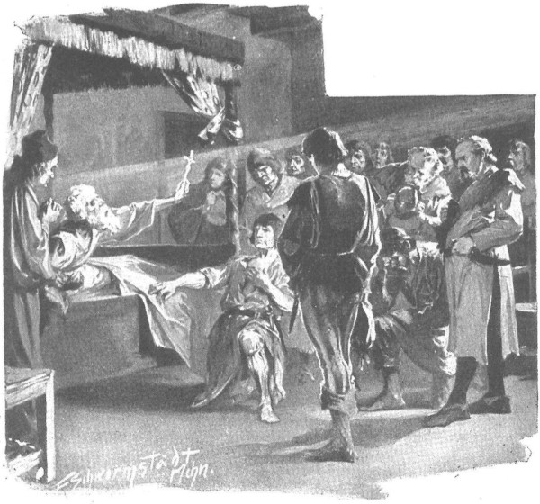

Ông Jurand thức dậy sau một giấc ngủ dài, khi cha Kaleb đang có mặt; ông quên mất những gì đã xảy đến với mình, ông không biết mình đang ở đâu, ông bắt đầu sờ lần giường và bức tường liền với chiếc giường. Cha Kaleb vội ôm lấy vai ông và bật khóc vì mừng rỡ, cất tiếng:
- Tôi đây! Người đang ở trang Spychow! Jurand! Chúa đã thử thách người… Nhưng người đã về với người của mình rồi… Những người khả kính đã chở người về… Jurand! Người anh em của tôi!…
Cha ôm ghì ông vào ngực mình, hôn lên vầng trán, lên đôi mắt trống rỗng, rồi lại ghì chặt ông vào ngực, và lại hôn ông; còn ông, thoạt tiên dường như bị choáng, như không hiểu gì hết, nhưng sau đó bắt đầu đưa tay trái lên trán, lên đầu, như thể để xua đi và rũ sạch những đám mây nặng nề của cơn mê cùng sự thảng thốt.
- Người có nghe thấy và hiểu tôi nói gì không? - Cha Kaleb hỏi.
Ông Jurand gật đầu, ra hiệu là nghe thấy, rồi với tay lấy cây thánh giá bằng bạc mà ông đã giành được từ một hiệp sĩ can trường người Đức, nhấc nó ra khỏi tường, áp lên môi, áp vào ngực của mình và rồi đưa cho cha Kaleb.
Cha bèn nói:
- Tôi hiểu người, người anh em! Chúa đã cứu người, đưa người thoát khỏi mảnh đất nô lệ, vì vậy Chúa cũng có thể trả lại cho người tất thảy những gì người đã mất.
Ông Jurand chỉ tay lên trời, ra dấu là tất cả mọi thứ chỉ nơi đó mới có thể mang trả lại cho ông, rồi lệ giàn giụa một lần nữa trong đôi mắt trống rỗng, và nỗi đau đớn khôn cùng hiện ra trên khuôn mặt đầy mệt mỏi của ông.
Cha Kaleb trông thấy cử động và nỗi đau ấy, hiểu rằng Danusia đã chết, nên cha bèn quỳ xuống cạnh giường và cầu nguyện:
- Lạy Chúa, xin cho tiểu thư được yên nghỉ đời đời, cầu cho ánh sáng vĩnh hằng chiếu rọi, cầu cho con Chúa được mãi mãi bình yên, amen.
Nghe thấy thế, người mù nhổm dậy và ngồi xuống giường, lắc đầu quầy quậy và xua tay rối rít như thể phản đối, muốn cha Kaleb ngừng lại, nhưng họ không hiểu ý nhau, bởi vì đúng lúc ấy, ông cụ Tolima bước vào, theo sau là cả dân chúng trong điền trang, những quản nông, các điền chủ giàu có và lớn tuổi của Spychow, các lâm dân và ngư dân, vì tin tức ông chủ trở về đã lan truyền ra khắp vùng Spychow. Họ ôm lấy đầu gối ông, hôn tay ông và òa lên khóc nức nở khi nhìn thấy một ông già tàn phế, không còn chút gì giống hiệp sĩ Jurand uy dũng ngày xưa, người tiêu diệt bọn Thánh chiến, người chiến thắng trong tất cả mọi trận đấu. Nhưng một số người - cụ thể là những người đã từng cùng ông tham gia chinh chiến - đùng đùng nổi giận, mặt tái đi và trở nên sắt đá. Lát sau họ cụm lại thành từng nhóm, thì thầm, huých vào tay nhau, chen lên gần ông, và cuối cùng một trong những cựu chiến binh của ông, đồng thời là thợ rèn của trang Spychow, tên là Sukharz, bước lại gần ông Jurand, ôm ghì chân ông mà nói:
- Ngay khi người ta đưa ngài về đây, thưa ông chủ, chúng con chỉ muốn tiến ngay đến thành Szczytno, nhưng ngài hiệp sĩ đã đưa ông chủ về ngăn chúng con đi. Còn người, thưa ông chủ, bây giờ hãy cho phép chúng con, bởi hận thù này khiến chúng con không kìm nổi nữa. Hãy để như những ngày trước. Bọn chó không thể làm nhục chúng ta, không bao giờ có thể… Chúng con sẽ đánh bọn chúng theo lệnh của ngài, chúng con sẽ lên đường ngay bây giờ, dưới sự lãnh đạo của ông Tolima hoặc không. Chúng con phải chiếm bằng được thành Szczytno và sẽ bắt thứ máu chó của chúng phải tuôn chảy - Chúa sẽ giúp chúng con!
- Chúa sẽ giúp chúng con! - Giọng mấy chục người nhắc lại.
- Đến thành Szczytno!
- Chúng ta đòi máu!
Và ngọn lửa cháy bừng lên trong những trái tim nóng nảy của dân Mazury. Những vầng trán nhăn lại, những cặp mắt long lên, đây đó nghe tiếng nghiến răng. Nhưng lát sau, những tiếng ồn ào và tiếng nghiến răng im dần, mọi con mắt đều chăm chú nhìn vào ông Jurand.
Gò má ông đỏ dần lên, như bắt đầu sục sôi trong ông là sự quyết liệt ngày trước, máu chinh chiến ngày trước. Ông đứng dậy và bắt đầu đưa một bàn tay mò tìm trên tường. Mọi người nghĩ hẳn ông đang tìm thanh kiếm, nhưng những ngón tay ông sờ đúng vào cây thập tự mà cha Kaleb đã treo ở chỗ cũ.
Ông lại lấy nó ra khỏi tường lần thứ hai, và mặt ông tái lại; ông quay sang phía mọi người, ngước lên trời đôi hố mắt rỗng và giơ cây thánh giá ra trước mặt.
Im lặng bao trùm. Ngoài sân, trời đã xế chiều. Qua các cửa sổ đang mở, vọng vào nhà tiếng hót của các loài chim, chúng đang sửa soạn chui vào ngủ trong các tổ ở dưới mái hiên của tường thành và trên những cây đoạn trồng trong sân. Ráng đỏ rực cuối cùng của mặt trời chiếu vào nhà, vào cây thập tự đang được giơ cao và mái tóc bạc trắng của ông Jurand.

Ông Jurand giơ cây thánh giá ra trước mặt
Thợ rèn Sukharz nhìn ông Jurand, nhìn quanh những đồng đội của mình, rồi nhìn ông Jurand lần nữa, cuối cùng anh từ giã và nhón chân đi ra khỏi phòng. Đằng sau anh, những người khác cũng lặng lẽ bước ra theo, rồi dừng lại trong sân và bắt đầu thì thầm với nhau:
- Thế rồi sao?
- Ta sẽ không lên đường hay sao?
- Ông chủ không cho phép!
- Ông chủ đã để quyền trừng phạt vào tay Chúa. Rõ là tâm hồn ông đã thay đổi.
Và quả đúng thế.
Trong buồng ông Jurand chỉ còn lại cha Kaleb, cụ Tolima, cùng với họ là Jagienka và Sieciechówna, trước đó khi nhìn thấy rất nhiều người có vũ trang đi qua sân, các cô cũng đã đến xem sẽ xảy ra chuyện gì.
Jagienka, táo bạo và tự tin hơn Sieciechówna, bước lại gần ông Jurand.
- Cầu Chúa giúp bác, thưa hiệp sĩ Jurand! - Cô nói. - Chúng cháu là những người đã đưa bác từ đất Phổ về đây.
Còn ông, mặt ông rạng ra khi nghe một giọng nói trẻ trung. Hẳn là ông cũng đã nhớ lại chính xác hơn mọi điều xảy ra trên đường Szczytno, vì ông ra dấu cảm ơn, gật đầu nhiều lần và đặt tay lên trái tim mình. Cô gái bắt đầu kể cho ông nghe rằng họ đã gặp ông ra sao và chàng trai người Séc Hlava - hộ vệ của hiệp sĩ Zbyszko - đã nhận ra ông thế nào, và làm cách nào rốt cuộc họ đã đưa được ông về Spychow. Cô cũng nói về mình, và rằng cô cùng với một người bạn, đang mang thanh kiếm, lá chắn và mũ trụ cho hiệp sĩ Maćko trang Bogdaniec, chú của Zbyszko, người đã rời Bogdaniec để đi tìm cháu, và bây giờ đang đi đến thành Szczytno, ba hoặc bốn ngày nữa sẽ lại trở về Spychow.
Nghe đến tên Szczytno, ông Jurand không bị sốc như lần trước lúc dọc đường, nhưng mặt ông biểu hiện vẻ vô cùng lo lắng. Tuy nhiên, Jagienka bảo đảm với ông rằng hiệp sĩ Maćko vừa tinh khôn vừa can trường, không ai có thể đánh lừa được ông đâu, hơn nữa, ông lại có lá thư của Lichtenstein, có thể đi khắp nơi một cách an toàn. Những lời đó đã khiến ông bình tĩnh hơn nhiều; và rõ ràng ông muốn hỏi rất nhiều điều nữa, nhưng không thể nên ông bứt rứt trong tâm. Nhận ra điều ấy, cô thiếu nữ thông minh bèn nói:
- Nếu chúng cháu được nói chuyện với bác thường xuyên hơn, thể nào chúng cháu cũng nói hết được tất cả mọi chuyện.
Nghe thấy thế, ông lại mỉm cười và đưa tay ra, mò mẫm đặt lên đầu cô, để yên hồi lâu, như thể chúc phúc cho cô.
Thực tình ông rất biết ơn cô, bên cạnh đó sự trẻ trung và giọng nói dễ thương như tiếng chim hót của cô khiến tim ông rất vui thích.
Kể từ đó những khi không cầu nguyện - điều mà ông dành gần hết cả ngày để thực hiện - hoặc không bị chìm trong giấc ngủ, ông đều tìm kiếm cô; nếu không tìm được, ông lại thấy nhớ giọng nói của cô và bằng mọi cách cố gắng để ra hiệu cho linh mục Kaleb cùng cụ Tolima rằng ông muốn có được chàng gia nhân dễ thương nọ ở bên ông.
Còn cô đến vì trái tim nhân hậu của cô chân thành thương cảm cho ông, ngoài ra ở bên cạnh ông, thời gian trôi qua nhanh hơn khi chờ đợi ông Maćko, người đã ở lại thành Szczytno lâu một cách kỳ lạ.
Lẽ ra ông đã phải quay lại trong vòng ba ngày, thế mà ngày thứ tư, rồi thứ năm đã trôi qua. Đến chiều ngày thứ sáu, cô gái quá sốt ruột, đã phải nhờ cụ Tolima phái người đi thăm dò, thì bất ngờ từ phía trạm gác trên cây sồi đã có tín hiệu báo rằng một đoàn người cưỡi ngựa đang tiến đến gần Spychow.
Lát sau, tiếng vó ngựa đã vang trên cầu dẫn và chàng hộ vệ Hlava phi ngựa vào sân cùng với một gia nhân mang thư tín. Jagienka, trước đó đã từ buồng trên xuống và chờ sẵn trong sân, nhảy phắt về phía chàng trước khi chàng xuống ngựa.
- Ông Maćko đâu? - Cô hỏi với trái tim đập dồn vì nỗi sợ hãi.
- Ông đến chỗ đại quận công Witold, và bảo cô ở lại đây. - Chàng hộ vệ đáp.